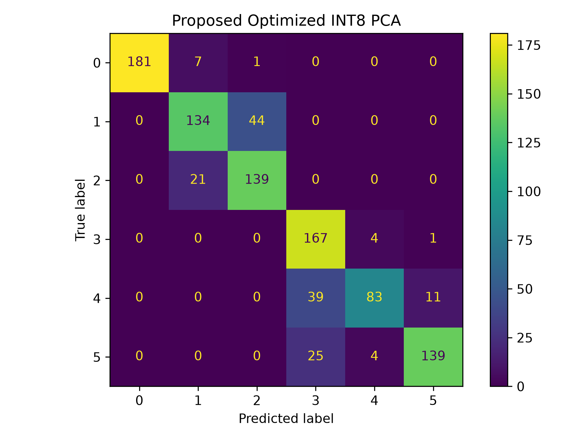

TOP ACCURACYLATEST
—%Loading measured results
Loading benchmark...
Classification benchmark / 01
Small models.
Same signal.
A measured look at how integer PCA holds up against a full-precision baseline, from matrix footprint to end-to-end classification quality.
Best trade-off
Proposed INT8
— accuracy · — projection
Latest measured benchmark result
FASTEST PROJECTIONLOWEST
— msLoading measured resultsSTORAGE SAVED—
— KiBSmallest quantized matrix vs Float PCAPCA COMPONENTS—
—Loading dataset details02
50 timed repeats · test set n = 1,200Method comparison
Projection latency
MILLISECONDSLower is better
Minimum — msMaximum — ms
Measured trade-offEfficient
01
Efficient
by design.
Loading measured storage and accuracy results.
Storage reduction—
Accuracy delta—
03
Projection + Random Forest classifierFull benchmark
| METHOD | ACCURACY | LATENCY | MEMORY | APPROX. ERROR | STORAGE SAVED |
|---|
04
Loading comparisonOur model vs five baselines
Proposed INT8 is listed first as our method, followed by five established alternatives evaluated on the same held-out data. Checkmarks and crosses compare each baseline with our measured result.
| MODEL / COMPARISON | ACCURACY | INFERENCE LATENCY | PCA MATRIX SIZE |
|---|---|---|---|
| Loading measured comparisons... | |||
07
FEATURE-LEVEL COMPARISONComparison with Existing Approaches
Feature-level comparison of PCA-based approaches for resource-constrained edge classification.
✓ Feature present — Not part of approach / not reported
| FEATURE | STANDARD PCA | EMBEDDED STREAMING HPCA | FIXED-POINT PCA ACCELERATOR | QUANTIZED PCA | PROPOSED INT8 PCA (OUR METHOD) |
|---|---|---|---|---|---|
| PCA dimensionality reduction | ✓ | ✓ | ✓ | ✓ | ✓ 562 → 93 components; 95.09% variance |
| Fixed-point / integer arithmetic | — | — | ✓ | ✓ | ✓ INT8, scale 128 |
| INT8 representation | — | — | — | ✓ | ✓ |
| Quantized PCA projection matrix | — | — | ✓ | ✓ | ✓ Post-quantization optimized |
| Edge / embedded deployment focus | — | ✓ | — | — | ✓ Wearable edge classifier |
| Post-quantization optimization | — | — | — | — | ✓ |
| Approximation-error objective | — | — | — | — | ✓ |
| Orthogonality-error objective | — | — | — | — | ✓ |
| Coordinate-wise integer optimization | — | — | — | — | ✓ |
| Combined approximation + orthogonality objective | — | — | — | — | ✓ J = Eapprox + λEorth; λ = 0.05 |
| 6-class HAR classifier integration | — | — | — | — | ✓ Random Forest |
| PCA matrix memory | 204.16 KiB FP32 reference | Not reported | Not reported | Not reported | 51.04 KiB INT8; 75% below FP32 |
| Accuracy on our HAR dataset | Not reported | Not reported | Not reported | Not reported | 82.83% |
| Measured CPU / Python latency | Not reported | Not reported | Not reported | Not reported | 0.8609 ms |
✓ indicates that the feature is part of the approach. Numerical results are shown only where they were measured in our experiment. Existing approaches use different datasets, hardware, and workloads and therefore are not directly comparable numerically.
Our proposed approach extends conventional INT8 PCA with a post-quantization optimization stage. The optimization jointly considers PCA matrix approximation and orthogonality, using coordinate-wise integer search to refine the quantized projection matrix.
04
PROPOSED PIPELINE / MEASURED OUTCOMEOur method
Refine the quantized projection, not just the precision.
Instead of stopping at direct rounding, the proposed pipeline starts with an INT8 PCA matrix and searches each coefficient at adjacent integer values. It keeps changes that reduce a combined reconstruction and orthogonality objective.
- 01Learn the projectionStandardize the inputs and fit PCA to retain 95% of training variance.
- 02Quantize and refineScale components by 128 into INT8, then run two local-search passes over up to 20 components.
- 03Classify in compact spaceProject samples with the refined matrix and train the 100-tree Random Forest.
OPTIMIZATION OBJECTIVEapproximation error + λ · orthogonality error
04
Classification report
Selected model
Proposed INT8
—%
test accuracyPrecision—
Recall—
F1-score—
Confusion matrix image
Open image ↗Loading results

Per-class report
| CLASS | PRECISION | RECALL | F1-SCORE | SUPPORT |
|---|
Confusion matrix values
05
Loading run metadataRun details & outputs
DATASET—
PIPELINEStandardScaler → PCA → Random Forest
REPEATS—
FEATURES—
QUANTIZATION—
CLASSES—
06
—